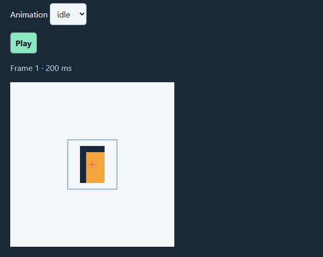
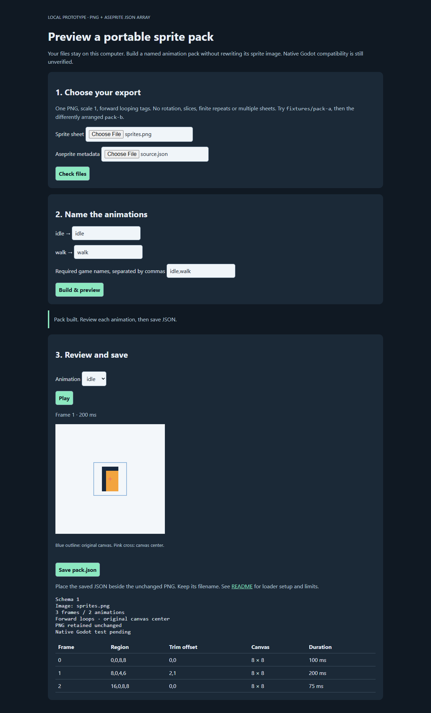

Offline Sprite Pack Preview — PNG + JSON
Preview a supported sprite sheet, map animation names, and save a small data pack beside your original image.
Free download · Offline prototype · 0.1.0-rc1 · CC0
Download the offline preview (ZIP, 26 KB)Extract the ZIP and open index.html. No installer or account is needed to use the local preview.

A free, offline prototype for indie creators preparing animated character packs. Download and extract the files, then open index.html in your browser. Select a local PNG and JSON-array export with animation tags; the page checks the supported format and previews frame timing and trimmed-frame placement. Your art does not need to be uploaded to a service.
Browser preview tested in Edge 153 on Windows. The included experimental Godot loader/demo has not been executed; Godot compatibility is not established. Other browser results are not yet verified. This is a narrow converter and preview, not a sprite editor or a finished game integration.
Try the supplied original geometric test sprites first:
- Select
fixtures/pack-a/sprites.pngandsource.json, then choose Check files. - Keep the idle/walk mappings, choose Build & preview, and inspect the timing and original-canvas outline.
- Choose Save pack.json. Copy the original
sprites.pnginto the same new folder yourself; the page downloads JSON only. Keep the PNG filename unchanged. - Repeat with pack-b in a separate folder. The test sprites use a different sheet layout. The README explains the supported fields and the remaining engine checks.
For your own art, start with one PNG and tagged JSON-array metadata in the documented Aseprite-style subset. Map exported animation names to the names you need. It accepts forward looping animations, per-frame durations and consistent trim offsets around the original canvas center. Rotation, multipage sheets, custom pivots, reverse/ping-pong animation and finite repeats are unsupported. Exported layers are not separately animated. See the README for size limits and exact schema.
If you already maintain a loader for known inputs, the included direct-loader baseline may be sufficient; it can bypass conversion, but it too awaits native Godot execution. This preview is most interesting when someone else must prepare and check a pack before handing it to you. You still choose animation names, check the art visually, copy the PNG, and verify any integration in your game. No time saving or production compatibility is claimed.
Developed with AI coding assistance. The original code and geometric example sprites are offered as CC0 in the included license; this is not a production character-art collection. Keep rights to your own assets. The included data format is not a hostile-file security certification.
Optional first-use feedback: Using your own supported export, could you preview it and save the PNG + pack.json pair without editing JSON by hand? Send optional feedback to hello@marketfauna.com with sample or own export / completed or stopped at step / manual work still needed / normal alternative. If you stopped, was the problem mapping names or recovering from a format error? What would you still need to test in your game? Please share only a short description or error text; no private art is needed. Sample-only playback is useful feedback too, but we will count it separately from an own-pack completion.
What has been checked
The release author exercised the extracted download in Edge 153. Independent review checked a fresh single-animation fixture at module level and reviewed the package; independent interactive first use remains unverified. The Godot loader and direct baseline have not been executed.
Archive SHA-256: d617477f87ff391b77d14adbfd704798a6e8772d4e7ee6139b73a12c48139afc. The ZIP includes source, README, license, examples and its file manifest.
Actual preview examples
{kind=link}

{kind=link}